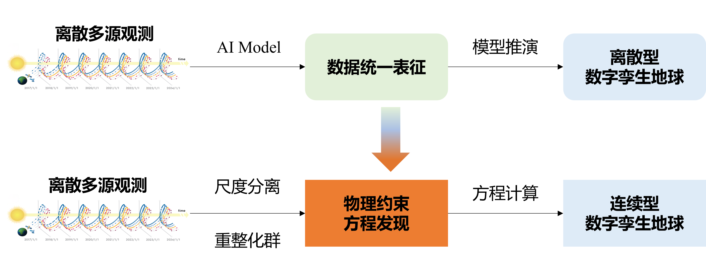

入口更聚焦
首页不再只是视觉展示页，而是以导航、模块和案例组织为中心的工作入口。
信息更统一
按钮、卡片、文案与态势控件全部统一到同一套配色与层级规则下。
缩放级别--
比例尺--
当前坐标--, --
Portal Modules
业务模块
以任务为中心组织首页入口，让数据搜索、模型处理和案例研判形成顺畅衔接，而不是分散跳转。
About Infrared Earth
关于红外地球平台
补齐旧主页的核心平台介绍，并用更清晰的两栏叙事方式融入新的门户视觉语言。
红外地球是一个专注于红外极端事件演化与分析的平台，通过尺度分离与重整化群理论， 将数字孪生地球从当前的离散重构发展为无尺度重构。
变革观测范式，致力于洞察地球极端灾害本质。构建双向多尺度耦合框架，刻画复杂系统级联效应。 以偏微分方程约束的高性能计算、新型计算架构打造全球领先的灾害风险模拟器。
Workflow
简单三步，完成专业处理
保留旧主页的三步流程说明，并重构成更接近 DestinE 平台节奏的时间轴式工作流程编排。
01
选择数据
与可持续发展大数据国际研究中心、国家青藏高原科学数据中心、国家气象信息中心、中国气象局等机构建立合作关系，平台拥有丰富的数据资源。
02
配置算法
根据多尺度理论研究，设计合适的处理算法，并配置相应的参数。
03
获取结果
查看、分析和下载处理结果，支持多种格式导出。

Cases
经典应用场景
将旧主页的案例展示区迁入新版首页，用统一的卡片比例、标签体系和按钮风格呈现真实业务场景。

Contact
联系我们
保留旧主页联系区的信息与表单，但本轮只做展示型交互，不新增后端保存接口。
发送留言
填写信息后会调用本地邮件客户端生成邮件草稿，便于直接与平台团队联系。